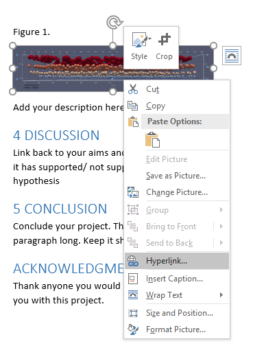

Submission Guidelines
This is a guide for students who are submitting their dissertation as a journal article online
- I am planning to submit my dissertation as an e-journal. What should I do?
The school is strongly recommending students to take part in student publication and the peer review process. The school will require students who are taking part to use the templates available for writing their dissertation. This will make it easier for students to convert their dissertation into a journal article using the template provided.
To access the templates, simply click on the links below:
Dissertation template
Journal article conversion template - Will I need to submit a print copy of my journal article?
No, students will not be required to submit a printed version of their journal article. All submissions will be done electronically.
- What file formats do I have to submit?
Templates are available as Microsoft Word document template. You will need to submit the word as well as a PDF format of your journal. So there will be 2 file formats to submit:
- Word doc
- How do I convert my file to PDF?
To convert your file from Word to PDF, simply click on “File”, “Save As” and under the “File Name”, there is an option “Save as type”, click and select “PDF”.
- Figures and Table Submissions
To ensure that all figure and tables are correctly imported, we require all students to make two separate submissions - one of their journal article and one of their figure and tables. Should any of the figure and tables be mislabelled or labelled in a different manner, we are unable to submit your journal for peer review. Please follow the guidelines below.
- All figures and tables have to be labelled clearly and in order as follows:
- Figure 1, Figure 2, ..., Figure n
- Table 1, Table 2, …, Table n
- Submit the figures and tables online at <
> - Add the link for each figure and table to the word document as follows:
Right click on the image and click on “Hyperlink”
Key in the URL into the “Address” space and click “OK”.
- How can I be sure my journal article will still be accessible online after graduation and the years to come?
We will do our best to ensure that the journal remains available online and as of now, the best format to ensure that the journal can remain online is making it available in PDF as this is accessible and available around the world and is less likely to cause compatibility issues in the future.
- What about copyrights?
The person who owns the copyrights for a student journal is the author. However, your journal might contain materials that have copyright protection elsewhere. This can be maps, illustrations, diagrams, texts or images. Such materials are known as “third-party” and you must ensure that you have permission to use before it is published online.
- What referencing/ citation style should I use?
AMA/ Vancouver style is required for students planning to submit their journal article. You may should citation managers such as Zotero to manage your references and easily add them into your journal using the add-on installed with the software.
This video link shows how you can add citations using Zotero:
click here - How to add GitHub DOI and the link to my source code into my journal article for submission?
Please ensure that before submission of the journal article, that you have uploaded your project into GitHub and mint a DOI onto it.
You can mint a DOI using Zenodo, following the instructions as follows: https://guides.github.com/activities/citable-code/
In the journal article temple, please ensure you have done the following:
- Add hyperlink to your GitHub project to “Software Repository”
Right click on “Software Repository” and add a Hyperlink with the link from Zenodo as shown below.
- Add your software DOI generated from Zenodo and include a hyperlink to it
Copy the DOI from Zenodo and replace the software DOI in the journal article template
Click on the DOI and a pop-up window will appear. Copy the Target URL and add that as a hyperlink to your journal article as shown below.
- Add hyperlink to your GitHub project to “Software Repository”
- My journal article contains sensitive data/ research was a partnership with an industry partner and they might not allow/ want my journal to be published.
You may request for a restriction on your journal article to be published for up to 3 years. Students who require a restriction in their publication will need to fill out a “Request to Restrict Access for Journal Article” form which has been co-signed by their supervisor(s).
If you have any queries about this, please discuss this with your supervisor or your module leader.
- End User Agreement
All students submitting their journal article will need to sign an End User Agreement which states the copyright policy and takedown policy and to agree that all work is done solely by you. This also includes granting the rights for the University for your work.
This agreement will be placed together with the submission of your journal article online.
- All figures and tables have to be labelled clearly and in order as follows: